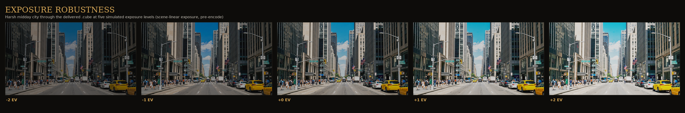

The look
Golden sunlight
Honey and amber warmth concentrated in sunlit midtones. Neutrals and whites are protected by a saturation gate, so nothing turns into an overall yellow wash — and already-warm golden-hour footage receives attenuated warmth instead of more of the same.
Filmic contrast
Rich midtones, deep but detailed shadows and a long, smooth highlight shoulder. Nothing at or above mid grey is ever rendered brighter than a neutral conversion — bright midday footage gets density, not glare. A subtle cool split-tone in deep shade gives sun/shade separation.
Skies & water
Richer, slightly deeper natural blues with cyan pulled back toward blue. Cloud whites are masked out and stay clean; water reads azure, not turquoise swimming-pool.
Greenery & skin
Greens stay natural and slightly warm — saturation is controlled and yellow-greens are nudged toward true green, never radioactive. Skin hue is held stable across lighting; sunlit skin rolls off creamy instead of clipping orange.
Eight scenes · before / after
Drag the gold handle (or anywhere on an image) to compare. BEFORE is the same
simulated footage through a neutral technical conversion (Apple Log 2 → Rec.709, gamma 2.4, no
grade). AFTER is the actual delivered .cube applied with
tetrahedral interpolation — the same method DaVinci Resolve uses.
Drag to compare · tap ⤢ for full screen
Contact sheet
Exposure robustness

Get the LUT
One file, whole pipeline
The .cube is standalone: it decodes Apple Log 2, converts Apple Wide Gamut to Rec.709, applies the grade and encodes gamma 2.4. Don’t stack it on another conversion LUT, and don’t use it on original Apple Log (v1) footage — that uses BT.2020 primaries.
Blackmagic Camera on iPhone
Import the .cube in Blackmagic Camera’s LUT settings and use it as the monitoring LUT while recording Apple Log 2 in ProRes, then apply it again in the edit. Full instructions are in README.txt inside the package.
Test footage
All comparisons here use simulated Apple Log 2 derived from AI-generated stills — clearly labelled as such. No physical iPhone or Blackmagic Camera testing was performed. Details and limitations: VALIDATION_REPORT.txt.
Direct links (work in iPhone Safari once merged to main):
.cube — https://github.com/ayembiboaz-collab/Apple-LOOTS/raw/main/GOLDEN_DAYLIGHT_CINEMA/LUT/GOLDEN_DAYLIGHT_CINEMA.cube
.zip — https://github.com/ayembiboaz-collab/Apple-LOOTS/raw/main/GOLDEN_DAYLIGHT_CINEMA.zip
If a download from an embedded preview is blocked, use the links above.